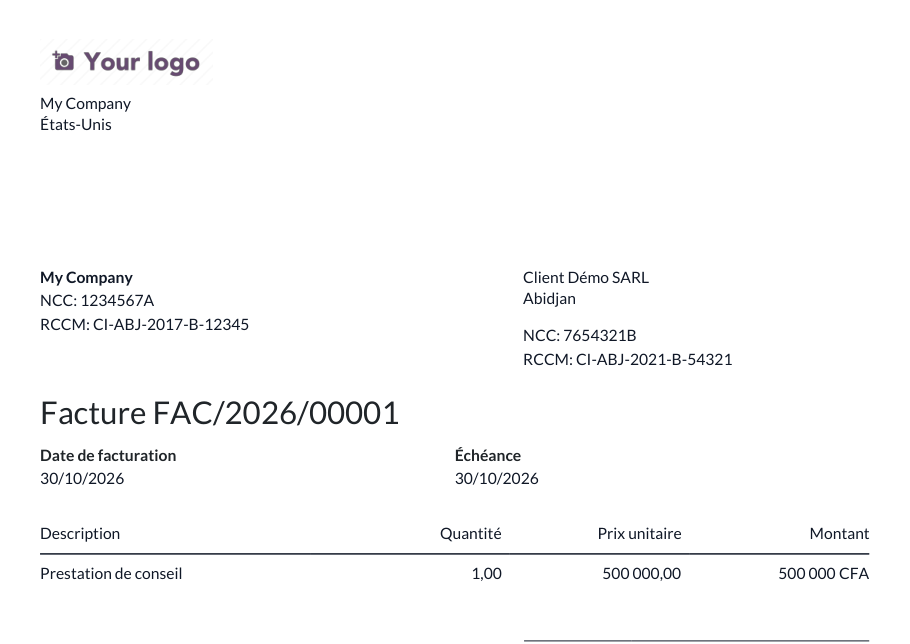

<section class="oe_container">
    <div class="oe_row oe_spaced">
        <h2 class="oe_slogan">Partner NCC / RCCM (Côte d'Ivoire)</h2>
        <h3 class="oe_slogan">Identifiants des entreprises ivoiriennes sur les contacts et les factures</h3>
        <p>
            Ajoute le NCC (numéro de compte contribuable) et le RCCM (registre du commerce) sur les
            contacts de type société, normalise la saisie, contrôle le format, garantit l'unicité du NCC
            par société et les imprime sur la facture PDF lorsqu'ils sont renseignés.
        </p>
        
    </div>
</section>
